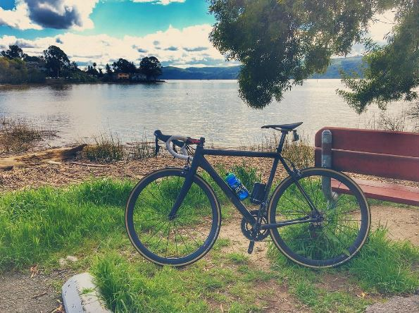
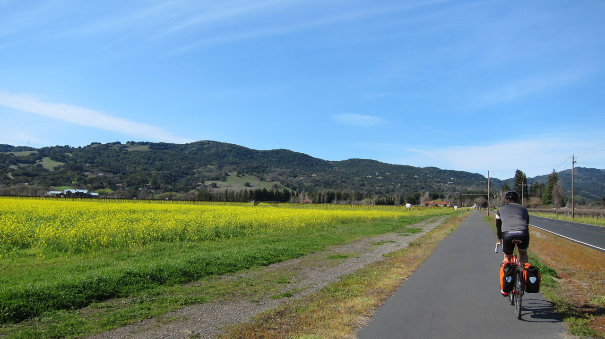
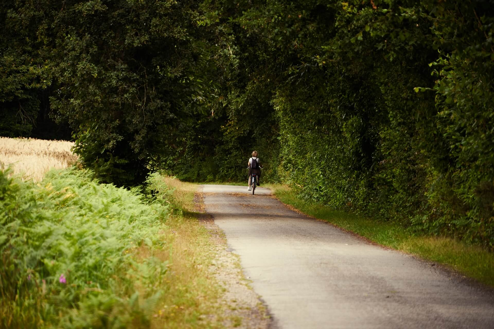
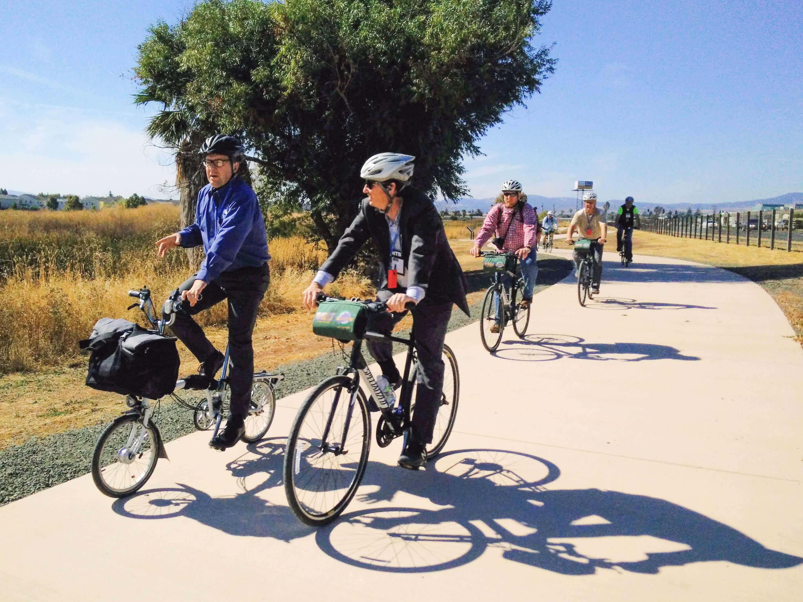
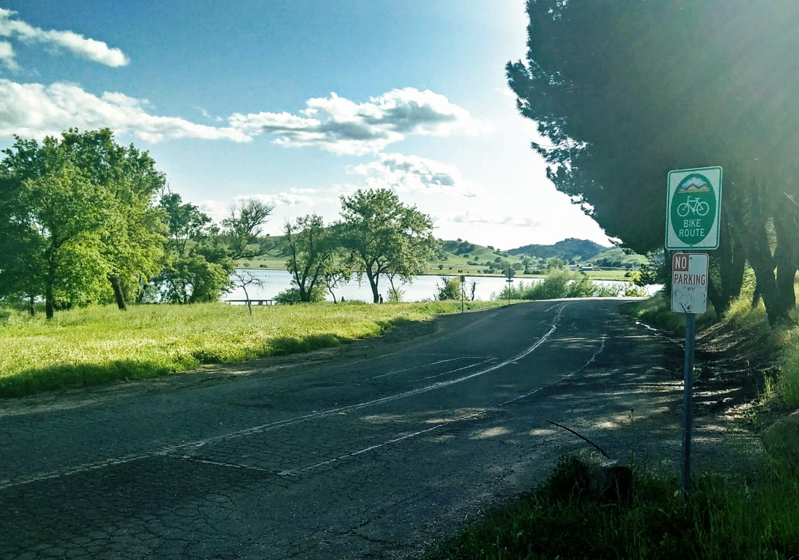
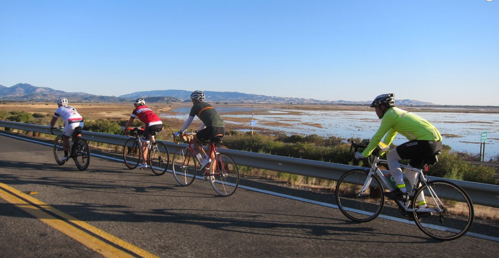
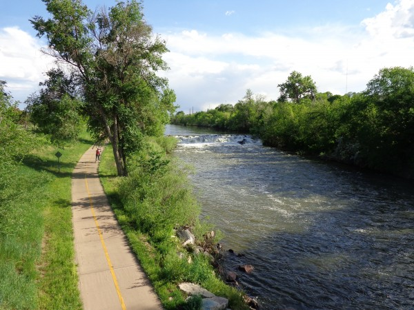
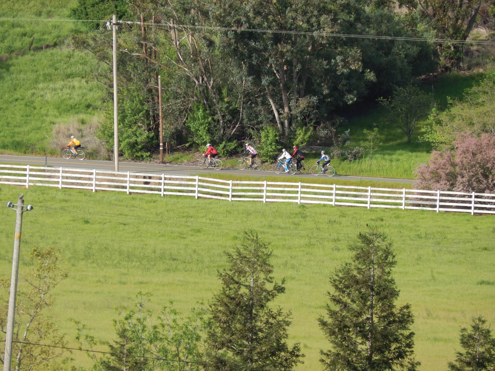
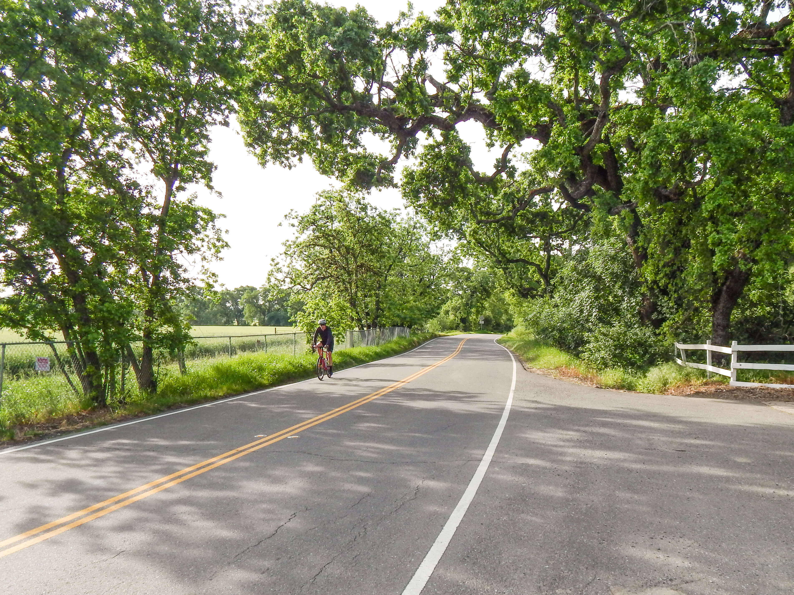

The Rides
Find out more about our Top 10 Rides
Benicia Recreation Area
This bike and pedestrian path inside the part is a great place to get out in nature, birdwatch, fish, and watch the ships pass by.
Be prepared to pay a parking fee.
Green Valley Ride
This separate bike and pedestrian path runs parralel to Green Valley Road. Ride in the shade of trees that line the southern half of the trail, then opens to views of Green Valley as you travel north.
Consider taking detours on the Bay Area Ridge Trail paths that cross this multi-use path.
Alamo Creek Bike Trail
Ride from one end of Vacaville to the other on this winding path that follows Alamo Creek.
Please use crosswalks when crossing the intersecting streets, and find time to stop by one of the adjacent parks.
Grizzly Island Trail to Rush Ranch
This ride has a mix of calm local streets, a separated bike path through wetlands, and a county road with no shoulder.
Schedule a little extra time to explore the walking and hiking trails of Rush Ranch.
Lagoon Valley Loop
Lagoon Valley Regional Park is just off of I-80 with over 470 acres of natural landscape to explore by foot or bike. Daily and annual parking passes are available at the gate.
The suggested route includes low traffic roadways inside and outside the park and some multi-use trails.
If the 9-mile loop down into Fairfield and back sounds daunting, many alternatives weave throughout the park.
Three Valley Loop
Experience some of the most picturesque agricultural areas in the county on this ride.
Be prepared that most of these low-volume county roads have no shoulders, however some stretches provide bike lanes or separated bike paths.
Earn extra credit by adding Green Valley to the ride and make it a four valley loop.
Bridge to Bridge Loop
Two bridges, two counties, four cities, all surrounding the Carquinez Strait.
This ride has quite the variety with plenty of climbing and great views as your reward.
Sections of this ride, like the bridges, have separate bike paths, but the majority of the ride is on roadways.
Vallejo, Benicia & Fairfield Loop
This popular ride for cyclists will test your lungs and your legs while passing through three Solano County cities and some of the best hillsides in the County.
This route is a mix of bike paths, bike lanes, and county roads with no shoulders.
Lake Solano Loop
Begin in Lagoon Valley Regional Park and head north through the orchards to Lake Solano. Pop over to the charming town of Winters to refuel for the ride back.
Motivation is easy to come by as you chase one great view after another. This route is entirely county roads with varying shoulder widths.
Martinez to Davis
For a grand finale, traverse the entire county by bike. Take in views of straits, marshes, and wetlands, then hills, valleys, and open space. And at the end, give your bike a break and head back to where you started by jumping on an Amtrak Capitol Corridor train where bikes are welcome.
We suggest cycling northeast by starting in Martinez to avoid strong headwinds.
